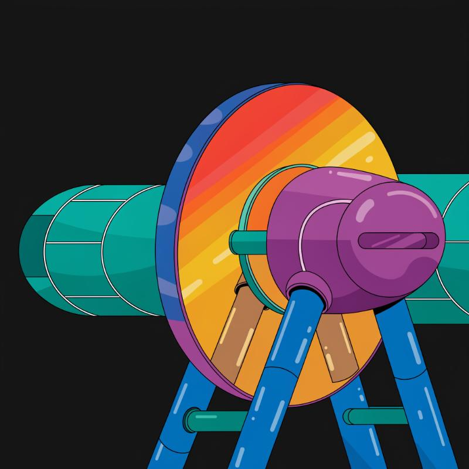

The Nancy Grace Roman Space Telescope started its life as a National Reconnaissance Office spy satellite, one of two the agency handed off to NASA in 2012 after cost overruns killed its original mission (Australian Broadcasting Corporation). Astrophysicist Brad Tucker described the donation as landing without warning on the agency's doorstep. NASA bolted an infrared camera and a coronagraph onto the hardware and pointed it away from Earth instead of at it, and on Sunday at 6:26 a.m. Central time, that retrofit rides a SpaceX Falcon Heavy out of Kennedy Space Center nine months ahead of schedule (Houston Public Media).
The telescope almost never got here. The first Trump administration proposed killing Roman's funding in 2018 and again in 2019, and the second Trump administration tried again in 2025 (Australian Broadcasting Corporation). Each time, astronomers showed up in person. Benjamin Pope, then at New York University and now at Macquarie University, was one of hundreds who traveled to Washington to lobby Congress directly rather than trust the process to hold on its own.
People came from all over the United States, just go to Congress and say: 'This matters to us, this matters to our universities, this matters to our research, this matters to the public.'
Benjamin Pope, astrophysicist, Macquarie UniversityThe mission survived all three attempts, and it's launching early instead of late, which in NASA's recent history counts as close to a miracle as the agency gets.
That survival is what makes the science worth the fight. Roman's 300-megapixel camera has the same resolution as Hubble's but a field of view roughly 100 times larger, meaning a single month of Roman observations would take Hubble about a century to match (Houston Chronicle). NASA scientist Julie McHenry said the telescope isn't likely to confirm the standard model of how the universe works.
We're very likely to demonstrate that our standard model is wrong and to set ourselves on a path to figuring out how does our universe really work?
Julie McHenry, NASA scientistRoman is expected to catalog roughly 100,000 new exoplanets beyond the 6,300 already confirmed, and to help settle what dark matter and dark energy, the substance and force behind 68% of the universe's makeup, actually are (Houston Chronicle).
Not every NASA telescope gets a rescue. Swift, the aging observatory Roman was once considered a partial successor to, is now on an uncontrolled path back to Earth after a private rescue mission failed, with NASA still unable to say when or where it will come down (Space.com). One instrument got three reprieves and an early launch. The other got left to fall.
The countdown clock in Florida is the easy part. The next 90 days are where Roman either earns the fight or becomes the next thing NASA has to explain.
Sunday's Launch Window Will Almost Certainly Hold, Because SpaceX Has Already Done the Hard Part Three Times This Year. The Falcon Heavy carrying Roman is a known quantity by now, and NASA's own go/no-go review closes Friday with no flagged issues in the reporting so far (Houston Public Media). The real risk window opens after separation, when Roman's solar panels and sunshade have to unfold correctly on the first try, the same sequence that turned Webb's 2021 launch into two weeks of held breath. If that deployment goes clean, expect NASA to say so within hours, not days, because an agency that just survived three cancellation fights has every incentive to make an early win visible fast.
That deployment is the mechanism. The politics are the stakes riding on it. Roman's nine-month head start over its original schedule gives NASA's Astrophysics Division, run by Shawn Domagal-Goldman, a rare data point it can point to the next time the White House's budget office reaches for the line item, and the most likely outcome is that NASA leadership uses the next 14 days of clean telemetry as exactly that kind of exhibit. Watch for Domagal-Goldman or Nicky Fox to appear in a follow-up briefing tying Roman's early arrival at L2 directly to cost discipline, because that is the argument that worked in Congress the last three times and there is no reason for NASA to stop making it now.
The instrument that didn't get to make that argument is still up there falling. Swift's uncontrolled reentry has no announced window yet, but NASA will almost certainly narrow that estimate within the next two weeks as the orbit decays further and tracking data firms up (Space.com). When that estimate lands, it will land the same week reporters are asking NASA to explain why one aging telescope got a rescue attempt and a fallback plan while the other got neither. NASA will frame Swift as routine atmospheric attrition, the fate every satellite eventually meets. The less comfortable framing, the one a probability piece has to name plainly, is that Swift is what happens to hardware without a Benjamin Pope showing up in Washington on its behalf. Roman had one. Swift didn't. That's not a coincidence the agency will want asked about twice.
If Roman's early lead becomes the argument that keeps the next telescope alive, the fight over Swift's ashes might be what changes how NASA fights it.
A Clean Roman Deployment Could Turn Benjamin Pope's Lobbying Trip Into a Template NASA Writes Down. Pope and hundreds of astronomers showed up in Washington three separate times because there was no other mechanism to save Roman when the White House budget office came for it. If the next two weeks give NASA the clean telemetry and early arrival at L2 that Probabilities expects, Domagal-Goldman's division gains something it didn't have before this launch: a finished, undeniable success story to hand to the same university researchers who organized those trips. That's a new combination. Grassroots lobbying campaigns are usually built from scratch each time a mission is threatened, improvised under deadline pressure by whoever can get a flight to Dulles. A Roman that launches early and delivers fast could give NASA's Astrophysics Division reason to formalize what Pope did informally, building a standing coalition of university astronomers primed to mobilize before the next line item gets cut, rather than after. The door that opens here isn't just Roman surviving. It's the survival tactic itself becoming reusable.
That door only matters if there's a next fight to use it on, and Swift is already supplying one. Swift's reentry has no announced window, which means NASA is currently deciding, in real time, how to talk about a telescope that failed to get a Pope of its own. If the coalition described above starts to take shape while Swift's decaying orbit is still front-page material, the two threads become impossible to keep separate. Reporters covering Roman's early win are the same reporters who will ask why Swift's rescue mission failed privately instead of publicly, and a NASA that's newly confident about telling Roman's survival story has an opening to reframe Swift too, not as routine attrition, but as the case study that proves why the coalition needs to exist before a mission is already falling. That reframing is only reachable now, because a week ago NASA had no clean win to point to when making the case, and Swift was just one more falling satellite nobody outside the field was tracking.
There's a second-order version of that same opening, and it cuts the other way. If NASA leans on Roman's success to argue for cost discipline the way Probabilities expects, the agency risks making Swift's abandonment look like the deliberate flip side of that same discipline, proof that NASA now sorts its own hardware into missions worth saving and missions worth writing off.
Almost regardless of what your scientific interest is, Roman is probably already planning to take observations.
Julie McEnery, Roman senior project scientistMcEnery's line was meant to describe Roman's versatility. Read against an uncontrolled reentry with no announced impact zone, it also describes an agency that can afford to plan meticulously for the missions it has already decided to protect. Whether that reading takes hold depends entirely on whether Swift comes down over open ocean or over a headline.
[INSUFFICIENT SOURCE MATERIAL]
The source articles for this story document a NASA telescope launch, its funding history, and a companion satellite's uncontrolled reentry. None of them contain a claim by an identifiable actor that is false or manipulative in active circulation — no politician, official, or public figure making a distorted statement about Roman, Swift, or the mission's cancellation history that the record contradicts. The Trump administration's cancellation attempts are documented facts already placed in Truths, not lies in circulation now. Manufacturing a claim to fill this section would violate the standing rule against inventing material.
![NTK]()